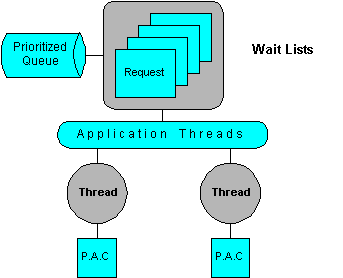
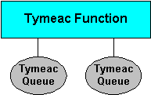

Tymeac Product Overview
This section gives an overview of the Tymeac product. Definitions are the Tymeac terms used throughout this manual.
Processing Overview
Tymeac provides a
prioritized queuing facility and
high-quality thread management in a
[separate JVM | internally] with a
minimal footprint that is
easy to use.

Tymeac is
a Backend Process Manager. Backend processes, with their application threads, are a means to isolate functions or perform common procedures outside the client domain.
a Container that manages persistence, messaging, logging, the user interface and much more.
a Component Architecture. Components need a means for scheduling, monitoring and linking together. Tymeac is a multi-threading, component architecture into which you may easily plug your components.
a high-quality Thread Manager and Queue Manager.
Fork-Join logic to the next level.
Evolving from these intrinsic properties are myriad features without limitation. The well managed, fault tolerant application components are unrestricted in any task.
Three Tymeac Server methods are available for clients:
syncRequest() -- Request with wait for completion. (A method is available to cancel this call.)
asyncRequest() -- Request without waiting for completion. (A method is available to cancel this call.)
shutRequest() -- Shut down the Tymeac Server.
Tymeac Queues and Functions are the base of Tymeac processing.
A Queue is the framework for processing each component of the request. The major framework elements are the Queue's Threads, Wait Lists, and the user-written Processing Application Class that executes the code. You define each Queue with its elements using a simple GUI.

A Function is simply a user-determined name and a list of Queues needed to complete the request. You define each Function using a simple GUI. By knowing the list of Queues associated with each Function, Tymeac is able to separate the request into its component parts.

At the lowest level is your Processing Application Class. This is the code you write to process the specifics of the application.
A Tymeac Queue Thread uses reflection to invoke the main() method of your class.
Your Processing Application Class is part of a Queue.
The Queue is part of a Function.Think of the Processing Application Class as a plug-in or component. In this way you may write applications that simply plug in to a threading environment.
(Developing your Systems (which is beyond the scope of an overview) describes this in detail.
How it works:
You develop the parameters for a Tymeac request in your Client application.
You pass the request (parameter) to the Tymeac Server either directly when using the internal server or remotely when using RMI, IIOP, Jini etc).
The Tymeac Server separates the request (Function) into its component parts (Queues) and schedules the request on each Queue.
A Thread within each Queue picks up the request and invokes your Processing Application Class passing it the input message from the parameter of the original request.
The Tymeac Server collects the return Objects from the Processing Application Classes and presents this response to the requesting client for Synchronous Requests, or, [optionally] further schedules the Output Agent for Asynchronous Requests.
The following is a functional overview of Tymeac processing for a single request.
For Request with wait processing, (Synchronous Request):
The client application class invokes the Synchronous Request Method on the Tymeac Server.
The Tymeac Server determines the list of Queues for this Tymeac Function and schedules the request on each Queue.
A thread on each Queue uses Reflection to invoke the Processing Application Class for the Queue.
As each thread finishes processing, the return Object, if any, from the Processing Application Class, moves to a common buffer.
The Tymeac Server waits until either all Queue Threads finish processing or a time-out occurs.
The Tymeac Server then returns the concatenated Object array from all Queue’s back to the client application.
For Request without wait processing, (Asynchronous Request):
The client application class invokes the Asynchronous Request Method on the Tymeac Server.
The Tymeac Server determines the list of Queues for this Tymeac Function, schedules the request on each Queue and returns an "in progress' message to the client application.
A thread on each Queue uses Reflection to invoke the Processing Application Class for the Queue.
As each thread finishes processing, the return Object, if any, from the Processing Application Class, moves to a common buffer.
When the last Queue Thread finishes processing (the order of which is irrelevant) that Queue Thread [optionally] schedules the Output Agent Queue (like another asynchronous request).
The user-written Processing Application Class may then further process the concatenated return Objects of the prior processing. This may involve passing a final result to the original client on the network.
Examples
We provide expounded and exemplified detail to our Product description sections, Essentials and Benefits:
Essentials Expounded
Benefits Exemplified